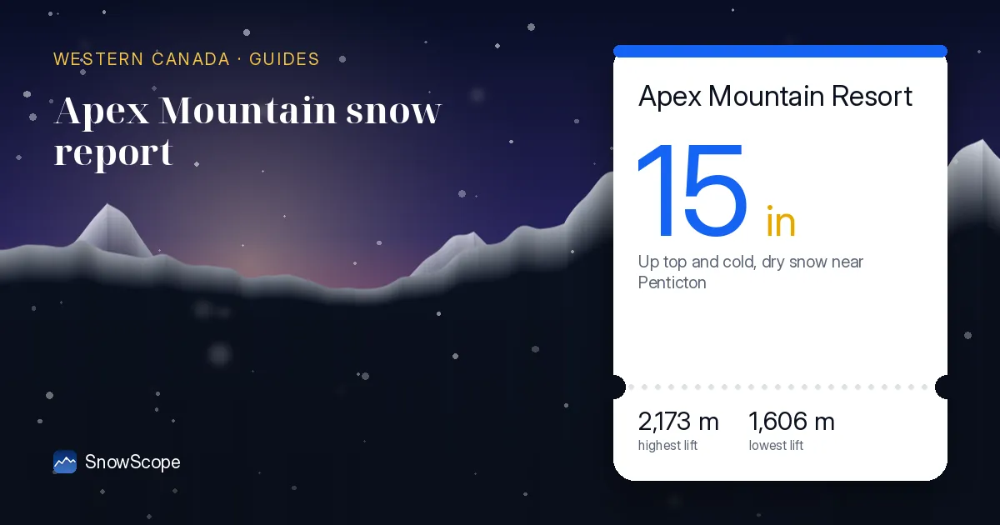
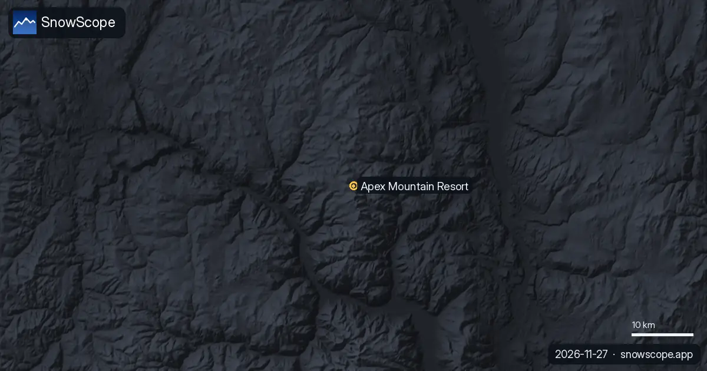

Apex Mountain snow report: 15 in (38 cm) up top and cold, dry snow near Penticton
Apex Mountain has 15 in (38 cm) of snow on its upper slopes on November 27, 2026, after 5 in (13 cm) in the last three days. At 6,201 ft (1,890 m) the pack is 8 in (21 cm), a little under the 14 in (35 cm) that is normal for the date, and the next three days add only about 2 in (4 cm).
See the live snow forecast for Apex Mountain Resort in the SnowScope appSnow depth, powder alerts and the 3D map, free.

Snow report, Friday November 27
Upper slopes: 15 in (38 cm). New snow: 4 in (9 cm) on Thursday, 7 in (19 cm) over the week. Forecast: dry Saturday and Sunday, around 2 in (4 cm) on Monday, 3 in (8 cm) over seven days at the top. Expect firm, cold groomers and thin cover in the trees.
Apex runs from 5,269 ft (1,606 m) to 7,129 ft (2,173 m). The snow here is famously dry: the mountain sits in the rain shadow of the Cascades, where storms lose their moisture before they arrive.
How this start compares
Apex usually reaches a 30 cm (12 in) base around November 23, so it is roughly on schedule. On December 8 a normal year has 20 in (52 cm) at 6,201 ft (1,890 m), on December 15 about 22 in (57 cm). This year it starts slightly behind, but closer to normal than the big Rockies resorts.
Christmas and New Year
On Christmas Day the usual depth is 26 in (67 cm); one Christmas in four has less than 21 in (54 cm), one in four more than 34 in (87 cm). A 50 cm (20 in) base by New Year was reached in 91% of 46 winters.
The best winter on our record was 1996-97, peaking at 6 ft (183 cm); the leanest, 2004-05, at 35 in (88 cm). The snow is usually deepest in March and April, around 39 in (100 cm).
The terrain
Apex is known in the Okanagan for steep, gladed terrain that skis well above its size, and for a relaxed village with short lines. The front side holds the classic bumps and blacks; the groomers on the other side of the hill are where families spend most of the day.
Night skiing and the outdoor skating loop through the trees make it a popular weekend escape from Penticton and Kelowna.
Apex versus Big White
Big White, up the valley, has far more snow on its upper slopes right now, more terrain and more beds. Apex is smaller, cheaper and closer to Penticton, and on a busy holiday weekend it often has the quieter slopes. If you are choosing for an early-December day trip, Big White is the safer bet for snow, Apex for value and space.
Daily numbers for the base, mid-mountain and top: Apex Mountain snow page.
Quick answers
Is Apex open now? The resort sets its own dates. With 15 in (38 cm) up top and cold nights, the groomed runs are in decent shape; the trees need more.
Is Christmas safe? Mostly: snow lay on the ground at 6,201 ft (1,890 m) on Christmas Day in 100% of winters, and the usual depth then is 26 in (67 cm).
Is it good for families? Yes, with a compact village and an easy layout, though the signature terrain is steep.
Getting there
Apex is about 40 minutes from Penticton by the Green Mountain road, a winding drive that requires good winter tires. Check the road report after a snowfall; the climb can be slow in the first hours of a storm.
Tips for skiers
- Early December: stick to the groomers until the trees fill in.
- Bring a thermos: Apex mornings in December are often the coldest of the Okanagan resorts.
- Midweek days are almost private on the upper lifts.
- Compare with other BC resorts on the Western Canada snow hub.
About these numbers
Snow numbers: SnowScope's snow map and forecast for today, and our record of 46 past winters at each resort (an estimate for the area, not the resort's own report).
Official avalanche bulletins: Avalanche Canada
Cite this report
For research, teaching or the press: the numbers and charts are free to reuse under CC BY 4.0 with this citation.
SnowScope (2026), Apex Mountain snow report: 15 in (38 cm) up top and cold, dry snow near Penticton, https://snowscope.app/blog/en/2026/11/apex-mountain-snow-report-late-november-2026-penticton-dry-snow.html, accessed 2026-11-27
SnowScope (Atlas Labs). (2026, November 27). Apex Mountain snow report: 15 in (38 cm) up top and cold, dry snow near Penticton. SnowScope snow reports. https://snowscope.app/blog/en/2026/11/apex-mountain-snow-report-late-november-2026-penticton-dry-snow.html
BibTeX
@misc{snowscope2026apexmountainsnowreportla,
author = {{SnowScope (Atlas Labs)}},
title = {Apex Mountain snow report: 15 in (38 cm) up top and cold, dry snow near Penticton},
year = {2026},
month = nov,
howpublished = {\url{https://snowscope.app/blog/en/2026/11/apex-mountain-snow-report-late-november-2026-penticton-dry-snow.html}},
note = {Published 2026-11-27 21:02 UTC; accessed 2026-11-27}
}· CC BY 4.0 · Methods, data and tools →
Apex Mountain Resort: snow and temperature by height, this winter vs last (tools) →
Follow Apex Mountain Resort
Free: a message when fresh snow is coming, and the forecast every morning.
More snow reports

Two-week snow forecast for Western Canada: Mount Washington Alpine Resort forecast to receive 202 cm by 5 December, with the heaviest snow on 24 November.

Mount Washington Alpine Resort leads with 76 cm of new snow forecast by 24 November. Data from 21 November 2026.

150 cm on the upper slopes: that is why Whistler Blackcomb heads our list. Snow on the ground, snow from the last 72 hours, snow still to come: …